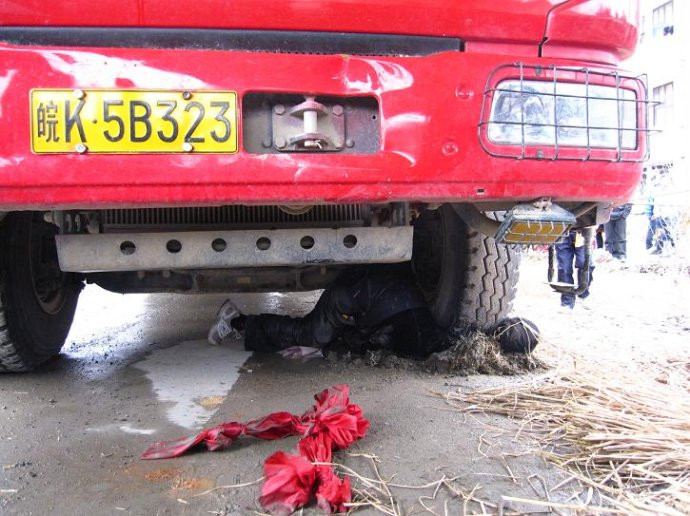
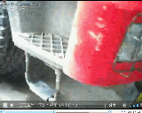

发生在去年圣诞的钱云会事件，已经过去2星期了，网上到处都有相关报道。俺本来想，这么大的事儿，应该是人尽皆知了吧。但是最近2天和某些公司同事闲聊时，惊讶地发现，居然还有人不清楚。今天，就利用俺博客读者众多的便利，再八卦一下此事，也算是炒冷饭吧。
钱云会，男，浙江温州人氏，生于1957年，逝于2010年，享年53；
他乃一介农民，当过的最大官就是当地寨桥村的村委会主任（俗称村长）；
他当选村长时，2500多村民，有2300多人都投他的票；
由于村里的土地被强行征用，他为了村民，屡次上访，屡次被抓、三次坐牢；
从2005年当选村长到现在，大部分时间，他是在牢里度过；
村长换届选举时，因为他被关在牢里，村民自发抵制选举；
他出狱那天，成百上千村民去监狱门口迎接，为他敲锣打鼓、鞭炮齐鸣；
他家原来也算小康，为了上访喊冤，变卖家产。现已家徒四壁，贫困潦倒；
据说有人想收买他，给他几百万的好处，让他不要再闹，他一口回绝；
他多次受到死亡威胁，但是毫不退缩；
2010年12月25日，当大伙儿在欢度圣诞佳节时，他被一辆土方车碾压致死。

关于他的意外死亡，可真是众说纷纭，下面俺列举几大方面的说法。
由于事情就发生在村口，事发后几分钟，就已经有很多村民已经围上来。当地村民钱成宇，成为主要目击者。他在当时跟围上来的村民说，村长是被几个人按倒在地上，然后用卡车碾死的。由于村长之前的维权行动以及他受到的死亡威胁，此说法得到大部分村民的认同。
然而天朝的基层衙门，显然不同意网友的看法。当地的宣传部门、公安部门、交警部门在事后2天，就迅速召开新闻发布会，声称此事纯属交通意外。
得益于手机和网络的普及，现场村民用手机拍的照片，当天就传遍了互联网。成千上万的人在微博上转发这个令人震撼的事件。
很多看了照片的网友，第一反应是：钱云会被轧死时，尸体的姿势很怪异，不像是普通的交通意外。通过对各种蛛丝马迹的分析，网友们总结了更多的疑点（考虑到篇幅，俺仅列出10个主要的）：
如果按照衙门的说法，死者当时在横穿马路，工程车撞过去，死者倒下，也是倒成和道路的方向一致。一个向前的力为什么会造成侧倒？被撞后，也不太可能仅仅颈部被压，还刚好和轮胎及马路成90度夹角。
根据警方、司机费良玉、村民钱成宇的陈述，都描述当时正在下雨，道路泥泞。但是，我们从现场照片来看，肇事车辆下面路面有一大块是干的（请仔细看第一张照片），并且车轮等离地很低的地方也是干的！难道肇事车辆在"泥泞"的道路以40迈速度开来，轮胎边缘不带湿漉漉的泥巴？难道周围都在下雨，就恰巧在撞死钱云会的那一小块地方不落雨滴？
显然，肇事车辆早在下雨前已停靠路边，等候多时。
工程车为何逆行，还无转弯避让迹象？事发的路面却很宽，有4条车道，但这辆车却逆行开到最左边的车道上，而且轧过钱云会之后立即停靠。静止后车辆完全平行于路面，没有朝左或朝右打方向盘转弯避让行人的迹象。
如果说是交通事故，应该有刹车痕迹。但是从现场的多张照片上，却看不到刹车痕迹。警方提供的照片有刹车痕，网友觉得有伪造的嫌疑。
在事发的路口，有监控摄像头。巧合的是，该摄像头在关键时刻不起作用。衙门的说法是：
在新闻发布会上，警方出示了事发当时钱云会打伞的照片，本意是证明事发的偶然性。但是恰恰相反，只能证明警方或相关人员跟踪拍摄被害人。现场监控"恰好"还没调试完毕，但是一个农村人过马路也有人"立此存照"的目的是什么？跟踪的目的又是什么？
据衙门的说法，肇事司机已被警方控制。事发5分钟，当村民把现场团团围住时，司机已经不见踪影。村民说是立刻让警察给带走的。警察为何这么神速地赶到现场？是否已经早有准备，在附近等候多时？
在钱云会出意外的前几天（12月18日），当地村民和周边开发区的施工人员发生激烈冲突。钱云会当时还指挥村民用多根电线杆作为路障，把村口的马路堵死，不让开发区的土方车通过。到12月20日，在当地警方的干预下，那些路障被移走。之后，由于听到某些传言及死亡威胁，钱云会连续多天都不敢在家中过夜。24日傍晚，他又出去躲避，到25日上午7点回到家。接近9点时，他接到电话，就往村口走去，然后就死在车轮之下。
如果对我国警察制度稍微有所了解，就会发现乐清市公安局的情况通报有悖常理。交通警察、派出所警察虽然同属于警察编制，但是其分工及权限各有区别。在我国，处理交通肇事不属于派出所的职责范畴，也没有派出所警察介入处理交通肇事的惯例，更没有这方面的法律规定。
而按照衙门的说法：
除了刚才提到的目击者钱成宇，还有另一个目击者黄迪燕，也对采访的媒体讲述事发经过。结果两人都被警方抓走。死者的两名亲属（女儿、女婿）也被警方抓走，获释后对媒体表示，遭受警方拷打。
如果是一个普通的交通意外，警方何必大动干戈捏？
从上述诸多疑点，都让人觉得，这不像是简单的交通意外。除了上述这些，某新浪博主还进行了更深入的分析（参见"这里"，如果被和谐，请看墙外"这里"）。
另有网易博主发帖“乐清钱云会被压死全过程录像曝光”。（貌似该帖已被和谐，搜索该标题可找到多处转载）此帖的视频被网友转成gif动画格式，参见如下。从该视频可以看出疑点2和疑点4。

所谓的网络意见领袖，是指那些在网上知名度很高，说话很有影响力的网络名人（典型的比如韩寒）。在最近1-2年的很多重大社会事件中（比如巴东邓玉娇案、宜黄拆迁自焚案、福建严晓玲案、等），大部分意见领袖都是站在网民这边，众口一词地批评党国的丑恶、腐败、专制。但这次的钱云会事件，意见领袖们出现重大分化。
人气很高的韩寒，可算是反对谋杀论的代表。在事发后发表博客《需要真相，还是需要符合需要的真相》，嘲笑网民的质疑是：
另一位同样在新浪上开博的名人李承鹏则与之相反——连续发出多篇博客，列举本案的种种疑点：
还有一些网络红人、意见领袖、知名人士，在一开始没有表态，而是组建了独立调查团，赶赴温州进行现场考察。比较知名的独立调查团有如下4个：
1、许志永（法学博士，知名维权人士）
2、于建嵘（中国社科院研究院）领衔，旗下包括笑蜀（知名评论员）。
3、项宏峰（法学博士、律师）领衔，旗下包括屠夫（知名网友，因当年介入巴东邓玉娇案的调查而闻名）
4、知名媒体人王小山也组了一个调查团，还联手他的死对头窦含章
这几个独立调查团，寄托了全国众多网民深切的期望，风尘仆仆地赶到了温州。大伙儿都指望他们去了后，能够拨开云雾见青天。谁曾想，4个调查团去了2-3天，就都草草收场，撤出温州。而且他们得出的结论，也不尽相同，令网友们跌破眼镜。
许志永以公盟的名义发出了《钱云会死亡真相》调查报告。基本结论是：
另外，许团队出现分裂，其团队成员张永攀否定这份调查报告，并表示：
于建嵘闪烁其辞地说了一通：
项团队的屠户网友，在公开场合说：
跟前面几个调查团类似，也没有得出啥实质性的结论。
本来，俺只想纯粹以客观叙述的方式，来描述此事。但是俺的主观，还是免不了要流露出来。想必大伙儿也已察觉出俺的观点了。今天就暂且写到这里，后面俺再来发表评论吧。
俺博客上，和本文相关的帖子（需翻墙）：
我们还能指望什么？——钱云会事件有感
★钱云会是何许人也？
钱云会，男，浙江温州人氏，生于1957年，逝于2010年，享年53；
他乃一介农民，当过的最大官就是当地寨桥村的村委会主任（俗称村长）；
他当选村长时，2500多村民，有2300多人都投他的票；
由于村里的土地被强行征用，他为了村民，屡次上访，屡次被抓、三次坐牢；
从2005年当选村长到现在，大部分时间，他是在牢里度过；
村长换届选举时，因为他被关在牢里，村民自发抵制选举；
他出狱那天，成百上千村民去监狱门口迎接，为他敲锣打鼓、鞭炮齐鸣；
他家原来也算小康，为了上访喊冤，变卖家产。现已家徒四壁，贫困潦倒；
据说有人想收买他，给他几百万的好处，让他不要再闹，他一口回绝；
他多次受到死亡威胁，但是毫不退缩；
2010年12月25日，当大伙儿在欢度圣诞佳节时，他被一辆土方车碾压致死。
关于他的意外死亡，可真是众说纷纭，下面俺列举几大方面的说法。
★当地村民是咋说滴？
由于事情就发生在村口，事发后几分钟，就已经有很多村民已经围上来。当地村民钱成宇，成为主要目击者。他在当时跟围上来的村民说，村长是被几个人按倒在地上，然后用卡车碾死的。由于村长之前的维权行动以及他受到的死亡威胁，此说法得到大部分村民的认同。
★天朝的衙门是咋说滴？
然而天朝的基层衙门，显然不同意网友的看法。当地的宣传部门、公安部门、交警部门在事后2天，就迅速召开新闻发布会，声称此事纯属交通意外。
★广大网民是咋说滴？
得益于手机和网络的普及，现场村民用手机拍的照片，当天就传遍了互联网。成千上万的人在微博上转发这个令人震撼的事件。
很多看了照片的网友，第一反应是：钱云会被轧死时，尸体的姿势很怪异，不像是普通的交通意外。通过对各种蛛丝马迹的分析，网友们总结了更多的疑点（考虑到篇幅，俺仅列出10个主要的）：
◇疑点1（尸体方位奇特）
如果按照衙门的说法，死者当时在横穿马路，工程车撞过去，死者倒下，也是倒成和道路的方向一致。一个向前的力为什么会造成侧倒？被撞后，也不太可能仅仅颈部被压，还刚好和轮胎及马路成90度夹角。
◇疑点2（车底路面干燥）
根据警方、司机费良玉、村民钱成宇的陈述，都描述当时正在下雨，道路泥泞。但是，我们从现场照片来看，肇事车辆下面路面有一大块是干的（请仔细看第一张照片），并且车轮等离地很低的地方也是干的！难道肇事车辆在"泥泞"的道路以40迈速度开来，轮胎边缘不带湿漉漉的泥巴？难道周围都在下雨，就恰巧在撞死钱云会的那一小块地方不落雨滴？
显然，肇事车辆早在下雨前已停靠路边，等候多时。
◇疑点3（肇事车辆逆行）
工程车为何逆行，还无转弯避让迹象？事发的路面却很宽，有4条车道，但这辆车却逆行开到最左边的车道上，而且轧过钱云会之后立即停靠。静止后车辆完全平行于路面，没有朝左或朝右打方向盘转弯避让行人的迹象。
◇疑点4（没有刹车痕迹）
如果说是交通事故，应该有刹车痕迹。但是从现场的多张照片上，却看不到刹车痕迹。警方提供的照片有刹车痕，网友觉得有伪造的嫌疑。
◇疑点5（监控摄像失效）
在事发的路口，有监控摄像头。巧合的是，该摄像头在关键时刻不起作用。衙门的说法是：
该摄像头尚未调试完毕，只能监控，无法储存。
◇疑点6（死者被人跟踪）
在新闻发布会上，警方出示了事发当时钱云会打伞的照片，本意是证明事发的偶然性。但是恰恰相反，只能证明警方或相关人员跟踪拍摄被害人。现场监控"恰好"还没调试完毕，但是一个农村人过马路也有人"立此存照"的目的是什么？跟踪的目的又是什么？
◇疑点7（肇事司机消失）
据衙门的说法，肇事司机已被警方控制。事发5分钟，当村民把现场团团围住时，司机已经不见踪影。村民说是立刻让警察给带走的。警察为何这么神速地赶到现场？是否已经早有准备，在附近等候多时？
◇疑点8（出事前的征兆）
在钱云会出意外的前几天（12月18日），当地村民和周边开发区的施工人员发生激烈冲突。钱云会当时还指挥村民用多根电线杆作为路障，把村口的马路堵死，不让开发区的土方车通过。到12月20日，在当地警方的干预下，那些路障被移走。之后，由于听到某些传言及死亡威胁，钱云会连续多天都不敢在家中过夜。24日傍晚，他又出去躲避，到25日上午7点回到家。接近9点时，他接到电话，就往村口走去，然后就死在车轮之下。
◇疑点9（离奇出动民警）
如果对我国警察制度稍微有所了解，就会发现乐清市公安局的情况通报有悖常理。交通警察、派出所警察虽然同属于警察编制，但是其分工及权限各有区别。在我国，处理交通肇事不属于派出所的职责范畴，也没有派出所警察介入处理交通肇事的惯例，更没有这方面的法律规定。
而按照衙门的说法：
蒲岐边防派出所9位民警接到指令后即于9时53分许到达现场。如果是一起普通的交通事故，为何需要派出所民警迅速出动？
◇疑点10（大动干戈抓人）
除了刚才提到的目击者钱成宇，还有另一个目击者黄迪燕，也对采访的媒体讲述事发经过。结果两人都被警方抓走。死者的两名亲属（女儿、女婿）也被警方抓走，获释后对媒体表示，遭受警方拷打。
如果是一个普通的交通意外，警方何必大动干戈捏？
◇其它疑点
从上述诸多疑点，都让人觉得，这不像是简单的交通意外。除了上述这些，某新浪博主还进行了更深入的分析（参见"这里"，如果被和谐，请看墙外"这里"）。
另有网易博主发帖“乐清钱云会被压死全过程录像曝光”。（貌似该帖已被和谐，搜索该标题可找到多处转载）此帖的视频被网友转成gif动画格式，参见如下。从该视频可以看出疑点2和疑点4。
★网上的意见领袖是咋说滴？
所谓的网络意见领袖，是指那些在网上知名度很高，说话很有影响力的网络名人（典型的比如韩寒）。在最近1-2年的很多重大社会事件中（比如巴东邓玉娇案、宜黄拆迁自焚案、福建严晓玲案、等），大部分意见领袖都是站在网民这边，众口一词地批评党国的丑恶、腐败、专制。但这次的钱云会事件，意见领袖们出现重大分化。
◇怀疑谋杀论
人气很高的韩寒，可算是反对谋杀论的代表。在事发后发表博客《需要真相，还是需要符合需要的真相》，嘲笑网民的质疑是：
这是属于被情绪冲昏了头脑。此贴发出后，遭到很多网友的攻击。考虑到篇幅，暂不引用网友对韩寒的谩骂。
◇支持谋杀论
另一位同样在新浪上开博的名人李承鹏则与之相反——连续发出多篇博客，列举本案的种种疑点：
《车轮滚滚，几多头颅凋零》俺摘录某篇的其中一段：
《恰恰》
《我是一只有情绪的鸡蛋》
好吧，我同意你们，那不过是一场普通交通肇事：那天钱云会恰恰接到一个神秘电话出门了，恰恰费良玉为绕开右侧的垃圾逆行到左边来，恰恰他看得到垃圾却看不到一个打着雨伞的大活人（视力恰恰有点偏视吧），如警方所说司机的左挡板把人撞了而且撞出了擦痕，但恰恰没把人撞飞（挡板恰恰练了吸星大法），就恰恰把人吸到车轮下面，恰恰钱云会喜欢用不同凡响的跪姿死去，司机踩刹车时就恰恰把人的脖颈轧住。此时是9时许，恰恰道路监视器因技术原因并未启动，两个多小时后却恰恰启动（因为可方便收集刁民围攻警察证据抓人的）。后来恰恰，平时没两三个小时不出警的警方五分钟后就蜂拥而至，装备得恰恰都很适合围剿人群，恰恰目击有人把钱云会按在路上的村民失踪了，恰恰一个上传了图片的女大学生也不见了，恰恰那个司机是无证且吸毒的人员，关于这种人员实际受谁控制恰恰你是不敢说出来的……还有很多恰恰，请大家补充。
总之寨桥村路口在跳一场大型恰恰舞。你会发现，每一个单独的恰恰都是可勉强接受的，但这一连串恰恰组合起来的概率就是很小，跟走路上被火星上一石头砸中左脚第三趾一样。
★独立调查团是咋说滴？
还有一些网络红人、意见领袖、知名人士，在一开始没有表态，而是组建了独立调查团，赶赴温州进行现场考察。比较知名的独立调查团有如下4个：
1、许志永（法学博士，知名维权人士）
2、于建嵘（中国社科院研究院）领衔，旗下包括笑蜀（知名评论员）。
3、项宏峰（法学博士、律师）领衔，旗下包括屠夫（知名网友，因当年介入巴东邓玉娇案的调查而闻名）
4、知名媒体人王小山也组了一个调查团，还联手他的死对头窦含章
这几个独立调查团，寄托了全国众多网民深切的期望，风尘仆仆地赶到了温州。大伙儿都指望他们去了后，能够拨开云雾见青天。谁曾想，4个调查团去了2-3天，就都草草收场，撤出温州。而且他们得出的结论，也不尽相同，令网友们跌破眼镜。
◇许志永调查团
许志永以公盟的名义发出了《钱云会死亡真相》调查报告。基本结论是：
钱云会之死属于普通交通事故。只是因为多种复杂因素的存在，导致该事最终通过网路演变成了一个巨大的公共事件。（这个结论与警方的声明完全一致，许志永立马被很多激动的网友骂得狗血喷头）
另外，许团队出现分裂，其团队成员张永攀否定这份调查报告，并表示：
我并不赞同许志永的调查报告，我认为报告太仓促，未能对疑点作出充分的论证和解释。
◇于建嵘调查团
于建嵘闪烁其辞地说了一通：
由于当地村民跪地哭诉，使他们很难理性做出判断，遂撤出当地，继续就村长之死背后的深层土地问题进行研究。但就是不明确地给个结论。貌似笑蜀也没有明确表态。
◇项宏峰调查团
项团队的屠户网友，在公开场合说：
现在综合收集到的资料，整个事件已经明朗，这不单纯是一个交通事故，确实是因为别人的原因造成他的死亡。貌似在4个调查团中，屠户的说法相对令网民们满意，但也不是完全满意。
◇王小山调查团
跟前面几个调查团类似，也没有得出啥实质性的结论。
★结尾
本来，俺只想纯粹以客观叙述的方式，来描述此事。但是俺的主观，还是免不了要流露出来。想必大伙儿也已察觉出俺的观点了。今天就暂且写到这里，后面俺再来发表评论吧。
俺博客上，和本文相关的帖子（需翻墙）：
我们还能指望什么？——钱云会事件有感
版权声明
本博客所有的原创文章，作者皆保留版权。转载必须包含本声明，保持本文完整，并以超链接形式注明作者编程随想和本文原始地址：
https://program-think.blogspot.com/2011/01/qian-yunhui.html
本博客所有的原创文章，作者皆保留版权。转载必须包含本声明，保持本文完整，并以超链接形式注明作者编程随想和本文原始地址：
https://program-think.blogspot.com/2011/01/qian-yunhui.html